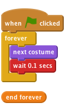

Level 2
Fruit machine
Introduction: This is a game that has three sprites that change costume. You have to stop them when they’re showing the same picture (like a fruit machine!).

Let’s import the different pictures for the game
Now we’ve got some costumes, we want the sprite to change between them.

Click the green flag. Do the costumes change at a sensible rate?
Save your project
Adjust the time in the wait block.What numbers do you think would make the game too easy, or too hard?
Great! We can make the sprite change costumes forever, but how do we make it stop when we click on it?
Click the green flag, wait for a moment, then click on the sprite.
Does it change costume before you click on it? Does it stop when you do click on it? Start the sprite again. Does it stop when you put the mouse pointer on it, without clicking? Does the sprite stop when you click somewhere else on the Stage? Somewhere else in the Scratch window? Somewhere outside the Scratch window?
Save your project
Now we need to make the other sprites so we can play our game!
Click the green flag. All the sprites should change. Try to stop them all on the same picture!
Save your project
When you start the game just after you’ve loaded it, all the sprites show the same costume and change in unison. How about you make the sprites change to a random costume when the green flag is clicked? Hint: try picking a random costume for each sprite when the game is started.
Well done you’ve finished the basic game. There are more things you can do to your game though. Have a go at these challenges!
Change the difficulty of the game somehow. Just making the costumes change quicker is easy. Try and do something more imaginative. Some ideas you might like to try:
Have fun coming up with your own things!
Every time you make a change, think about whether it make the game easier or harder. Is the game too easy or too hard? How can you adjust the difficulty so it’s just right?
Different people will have different skills at playing the game. How could you make the game adjust its difficulty depending on the player?
One way you could do it is to adjust the speed the costumes change at. You can use a variable, called delay, to give the duration of each sprite’s wait block. If the player wins the round, the delay can be reduced a little (to make the game harder). If the player loses the round, the delay can be increased a little (to make the game easier).
The aim of the game is click on the sprites so they’re stopped while showing the same costume. It would be nice if the stage detected when you’d finished playing and then told you if you had won or lost by checking to see if each sprite had the same costume.
First, the stage needs to know when the player has finished. We can do this by having the stage check to see if all sprites have stopped moving when we click on one of them. Go back and modify each of the sprite# clicked blocks to broadcast a new message, checkForEnd
The Stage can respond to this message and check if the game is over by seeing if all three sprites’ stopped variables are set to 1, by using the x position of Sprite block for each sprite, and changing “x position” to stopped If all three sprites have a stopped value of 1, we know the game is over and we can check to see if the player has won.
To do this, we can use the same x position of Sprite block, but instead of looking at the stopped variable, we can look at the costume # and see if Sprite1 has the same costume as Sprite2, and if Sprite2 has the same costume as Sprite3.
To do this, you’ll need an if block to check each stopped variable, and inside that an if... else block to see if the player has won or lost by comparing each costume #.
From this point on, you could announce the result of the game using a broadcast and respond to this with another sprite. Maybe get Felix back to congratulate or commiserate the player?
Well done you’ve finished, now you can enjoy the game! Don’t forget you can share your game with all your friends and family by clicking on Share on the menu bar!